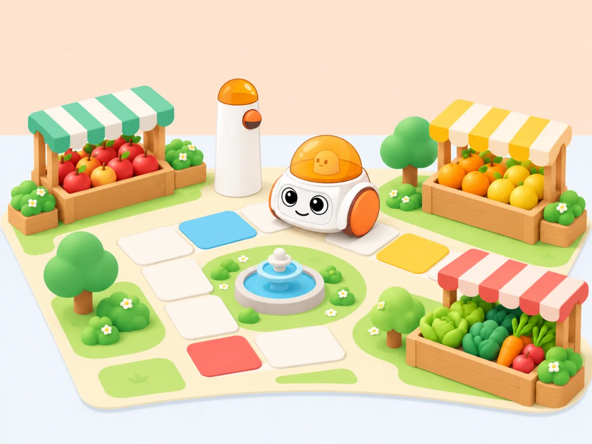

Ruta Saludable pel Mercat del Barri
🏷️ Salut, hàbits i benestar❓ Repte o Pregunta Guia
"Com podem planificar la compra de fruites i verdures de temporada al mercat gastant el pressupost just i fent el camí més curt?"

🏆 Competències Clau Treballades
- Competència Matemàtica: Càlcul de distàncies, diners senzills i geometria en graella.
- Competència Digital: Pensament algorítmic tangible sense pantalles.
- Competència en Hàbits Saludables: Dieta mediterrània de proximitat.
📅 Seqüència Didàctica de Sessions
-
S1: Selecció dels ingredients saludables per a una macedònia de temporada.
-
S2: Creació del mapa del mercat amb parades de fruita i preus simbòlics.
-
S3: Planificació de la ruta amb fitxes físiques de moviment i bucles Matatalab.
-
S4: Execució i depuració: comprar tots els ingredients sense xocar.
📋 Criteri d'Avaluació Curricular
Aplica estratègies de càlcul bàsic i orientació espacial per resoldre problemes de la vida quotidiana en entorns manipulatius.
Abans de començar
Utilitzeu una carta de mercat de ficció amb una llista curta de productes, unitats i preus. Decidiu si el pressupost ha d'incloure tots els articles o si cal prioritzar-ne alguns; l'objectiu és raonar sobre cost i seqüència, no fer valoracions sobre l'alimentació familiar.
🧭 Evidències que recollirem
- Una taula amb quantitat, preu i suma calculada, comprovada per un altre equip.
- Una ruta de peces justificada i provada sobre el mapa.
- Una explicació de com ha resolt una compra que superava el pressupost inicial.
♿ Matemàtiques amb més d'una entrada
Ofereix preus amb xifres i representació visual, monedes de joguina i una recta numèrica. Permet ordenar peces sobre el mapa sense competició temporal. Per aprofundir, comparen dues cistelles possibles i argumenten quina s'ajusta millor a les condicions acordades.
🔁 Retorn al repte
Al final, contrasteu la ruta prevista amb la recorreguda i el cost previst amb el càlcul real. Demana quin pas de la planificació evitarien improvisar la pròxima vegada.
🔗 Referent i adaptació
La idea de programar un robot perquè arribi a destinacions diferents i explicar la ruta es pot veure a Deliver Animals de Matatalab. Aquesta situació la transformem en una ruta de compra saludable al mercat de proximitat, amb decisions de pressupost, temporada i recorregut; els materials i visuals d’aquesta proposta són propis.